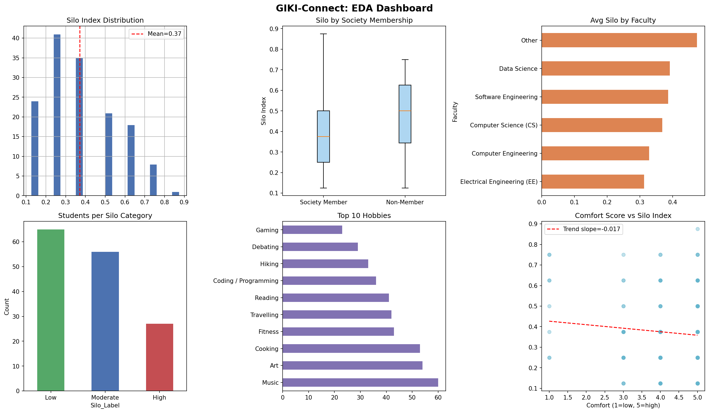
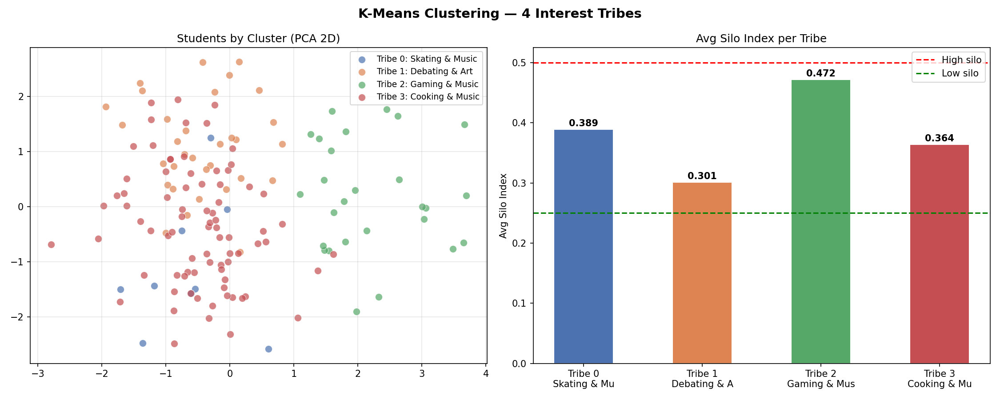

GIKI-Connect: Analyzing Social Siloing and the “Society Bridge” in a Residential Campus
Quantifying micro-silos, testing whether societies bridge diversity, and clustering students by shared interests instead of demographics.
1 Problem statement
GIKI is a premier residential campus with a diverse student body drawn from many regions of Pakistan. A recurring social pattern is social siloing: many students stay inside small “micro-silos” of roughly three to four close friends, often aligned with faculty, province, hometown, or batch, despite living in close proximity.
This project uses data science to:
- Quantify isolation and surface barriers (language, faculty, seniority).
- Evaluate the society factor — whether GIKI’s society culture measurably bridges those silos.
- Model a direction for action — machine learning to surface affinity-based “optimized social connections” from shared interests rather than demographics alone.
2 Data collection strategy
Primary data comes from a structured digital survey distributed across GIKI hostels. Planned fields include:
- Demographics: faculty (CS, ME, EE, etc.), hometown or nationality, year of study.
- Society variables: membership (yes/no), named societies (e.g. SOP, GMS, ACM), and involvement (hours per week).
- Social connectivity: number of close friends, share of friends outside own faculty, cross-batch interaction frequency.
- Interest vectors: a checklist of hobbies (gaming, hiking, coding, photography, cricket, and similar) to capture “deep” similarity for clustering.
3 Data preprocessing
- One-hot encoding of categorical fields (faculties, cities, societies) into numeric indicators.
- Feature engineering — Silo Index: a compact measure of how concentrated friendships are in same faculty or province (implemented in the notebook from survey range bands).
- Normalization / scaling of numeric inputs (e.g. society hours) so features contribute fairly in distance-based models.
- Imputation for missing responses using sensible defaults or means where appropriate.
The notebook augments limited real responses with synthetic rows drawn from the same empirical distributions so K-Means has enough samples — all synthetic IDs are clearly anonymized (e.g. ANON-YYYYXXX).
4 Model development
Two statistical tests frame the silo question before the machine-learning layer.
Chi-square test of independence
Tests whether society membership (yes/no) and a diversity-related split (high/low silo) are associated beyond chance.
- H₀
- Society membership has no association with social diversity.
- H₁
- Society membership is associated with greater social diversity.
- Decision rule
- If p < 0.05, reject H₀ and treat the association as statistically meaningful.
An extended view can repeat similar tests by society name to see which organizations behave as bridges versus new silos.
Pearson correlation
Correlates society involvement hours (numeric) with the Silo Index (numeric). A negative correlation supports the story that more society time aligns with lower siloing, holding linearity assumptions in mind.
K-means clustering — solution layer
- Input: high-dimensional vectors from hobbies and related features.
- Idea: cluster on “deep” similarity (interests) rather than surface demographics.
- Output: Interest tribes — e.g. students from different years or regions who cluster on shared passions.
5 Results and discussion
- Network-style narrative: contrast tight clumps among non-members with society members as connectors across faculties.
- Isolation gap: compare Silo Index across groups (e.g. international students) and whether societies narrow that gap in the data.
- Discussion: contrast “accidental” ties (hostel and class proximity) with more intentional, data-informed affinity matching for a more integrated campus.
6 Conclusion
GIKI is diverse on paper, but the small closed friend groups reflect structural silos. Statistical tests probe whether societies act as the main bridge; K-means surfaces hidden interest-based communities. Together, these pieces support a practical recommendation: use interest tribes to shape cross-faculty orientation, mixer design, and society recruitment so connections are easier to form on purpose, not only by accident.
Notebook outputs
After you run the notebook, charts appear under output/. They load here automatically if present.

